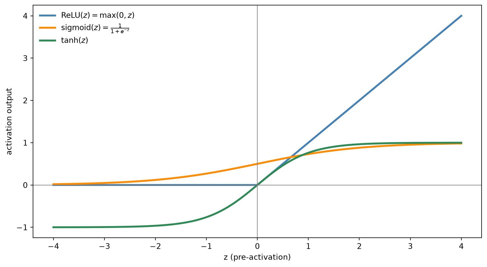
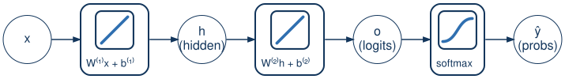

Multilayer Perceptrons, Part 1
Advanced Machine Learning
Sam Ogden
DRAFT
This slide deck is still under active development. Expect changes before it is finalized.
Learning objectives
- Show why stacking linear layers alone doesn’t add any power
- Introduce hidden layers and activation functions as the fix
- Assemble the full MLP forward pass, and walk one example through it by hand
The limits of a linear model
The Big Question
Does stacking more linear layers make a more powerful model?
A problem no linear boundary can solve
- No single straight line separates class A from class B — every line either mixes classes, or leaves one point misclassified
- This isn’t about picking better W and b; no linear model, no matter how well trained, can solve this
Try stacking two linear layers anyway
- Idea: chain two linear layers together, hoping the extra layer adds power o = W^{(2)}\big(W^{(1)}x + b^{(1)}\big) + b^{(2)}
- Multiply this out: o = \underbrace{W^{(2)}W^{(1)}}_{W'}\,x + \underbrace{W^{(2)}b^{(1)} + b^{(2)}}_{b'} \;=\; W'x + b'
- That’s still just one linear model, with different names for its parameters
The Big Idea
Stacking linear layers alone is still just one linear layer in disguise.
Important
Whatever a single linear layer can’t do, no number of stacked linear layers can do either — something has to break the pattern
Hidden layers and activation functions
What’s missing
- The problem wasn’t “not enough layers” — it was that every layer so far is linear, and linear-of-linear is still linear
- Fix: insert a nonlinear function between the two linear layers, so they can’t collapse back into one
The Big Idea
Break up the linear layers with a nonlinear function, so stacking them actually adds power.
Meet three activation functions

- All three are nonlinear — that’s the one property that actually matters here
- Each shapes its input differently, which is what makes them useful for different situations
Breakdown: three flavors of nonlinear
ReLU
- \max(0, z)
- Zero for negative input, identity for positive
- Cheap, doesn’t saturate for large z — the modern default
sigmoid / tanh
- Squash everything into a bounded range ([0,1] or [-1,1])
- Already familiar — sigmoid is softmax’s K=2 special case, covered previously
- Very small derivative for large |z| — the gradient there gets very small
- This lecture uses ReLU for its worked example — simplest to compute by hand, and its derivative (covered next lecture) is either 0 or 1
The hidden layer
- Insert an activation function \sigma right after the first linear layer, before it feeds into the second: h = \sigma\big(W^{(1)}x + b^{(1)}\big)
- h is a hidden layer — it’s not the input, and it’s not the model’s final output; it’s an intermediate representation the model builds for itself
- Same mechanics as any linear layer so far — one row of W^{(1)}, one entry of b^{(1)}, per hidden unit — just with \sigma applied afterward
The full forward pass
Assembling the whole pipeline
- Hidden layer, same as just derived: h = \sigma\big(W^{(1)}x + b^{(1)}\big)
- Output layer — same shape as lecture 05’s classifier, just fed h instead of x: o = W^{(2)}h + b^{(2)}
- Softmax, exactly as before: \hat y = \text{softmax}(o)
The picture so far

- This is missing one piece — the activation function between the two linear layers hasn’t been drawn in yet
- Notice the shape: linear, then linear, then softmax — three functions chained, same “apply one function, then the next” idea as lecture 05, just one link longer
The full picture, with the activation function

Note
Four functions, applied one after another — linear, ReLU, linear, softmax. This whole chain is what “forward pass” means for a network with a hidden layer
Worked example: our fruit, one layer deeper
Same task, same starting point
Same fruit classifier as lecture 05 and lab 04 — apple / banana / orange, from weight and color score — now with a 2-unit hidden layer in front of the classifier we already know. Same example row as lab 04:
x = [1.2,\ 0.2], \qquad \text{true class} = \text{banana}
We’re partway through training — here’s where the parameters currently stand:
Hidden layer (W^{(1)}, b^{(1)})
| unit | row of W^{(1)} | b^{(1)} |
|---|---|---|
| 1 | [1,\ 1] | 0 |
| 2 | [-1,\ 2] | 0 |
Output layer (W^{(2)}, b^{(2)})
| class | row of W^{(2)} | b^{(2)} |
|---|---|---|
| apple | [0.5,\ 1] | 0 |
| banana | [-0.3,\ 2] | 0 |
| orange | [0.2,\ -1] | 0 |
Step 1: the hidden layer’s pre-activation
h_{\text{pre}} = W^{(1)}x + b^{(1)}
h_{\text{pre},1} = (1)(1.2) + (1)(0.2) = 1.4, \qquad h_{\text{pre},2} = (-1)(1.2) + (2)(0.2) = -0.8
Note
Recognize those numbers? They’re exactly lab 04’s logits — the same arithmetic, just relabeled. Here they’re not the final answer, they’re a hidden layer’s raw input to ReLU
Step 2: apply ReLU
h = \max(0,\ h_{\text{pre}})
h_1 = \max(0,\ 1.4) = 1.4, \qquad h_2 = \max(0,\ -0.8) = 0
h = [1.4,\ 0]
Important
Unit 2 died — its pre-activation was negative, so ReLU zeroed it. It contributes nothing to the output layer for this example. Keep that in mind — it matters again next lecture
Step 3: the output layer
o = W^{(2)}h + b^{(2)}
o_{\text{apple}} = (0.5)(1.4) + (1)(0) = 0.7, \qquad o_{\text{banana}} = (-0.3)(1.4) + (2)(0) = -0.42, \qquad o_{\text{orange}} = (0.2)(1.4) + (-1)(0) = 0.28
o = [0.7,\ -0.42,\ 0.28]
- Because h_2 = 0, only unit 1 of the hidden layer actually influenced these logits — column 2 of W^{(2)} contributed nothing this time
Step 4: softmax and the loss
\hat y = \text{softmax}(o) = [0.5042,\ 0.1645,\ 0.3313]
L = -\log(\hat y_{\text{banana}}) = -\log(0.1645) \approx 1.8048
- Same story as lab 04’s untrained classifier: apple currently wins, even though the true label is banana
- One layer deeper, same forward-pass mechanics — every step was still just “apply this function, then the next”
Summary
What we built, and what’s still missing
| Model | input → linear → ReLU → linear → softmax |
| New idea | a hidden layer, h = \sigma(W^{(1)}x+b^{(1)}), made possible by a nonlinearity |
| Still the same | the output layer, softmax, cross-entropy — all exactly as in lecture 05 |
Warning
The open question: training needs \nabla W^{(1)}, \nabla b^{(1)} — but the loss only touches W^{(1)} indirectly, through h, o, and \hat y. The chain rule from lecture 05 got a gradient to one layer. Does it still work with two?
Tip
Next lecture: backpropagation — extending the chain rule through a hidden layer, worked on this exact example
CST463 · Advanced Machine Learning